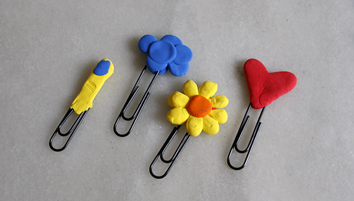

An easy and fast bookmark, to do with dough.


An easy and fast bookmark, to do with dough.


The clay which dries with air and swells has so many possibilities, we will show you some starting with jewels! A little drop or a ring.
Read more →
With the clay that dries on air and a swells a little, you can make eyes for fruits or vegetables. It´s a good idea to encourage…
Read more →

A good technique is to draw with ink, children can try to draw with feathers, paint with bamboo or a real feather ( you have to…
Read more →
For all Harry Potter fans. From a bead shop we bought Medallions, where you can glue your own image! After Hannah has been assigned to Gryffendor…
Read more →